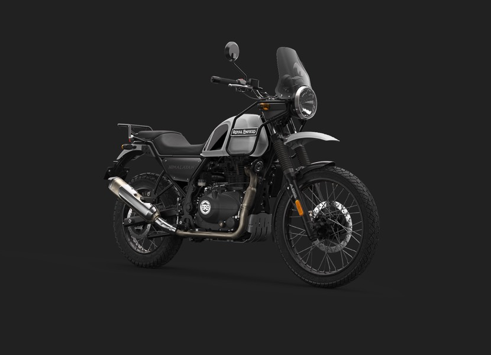
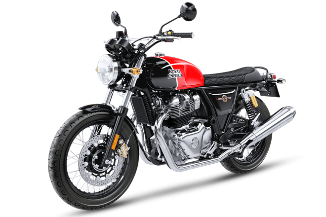
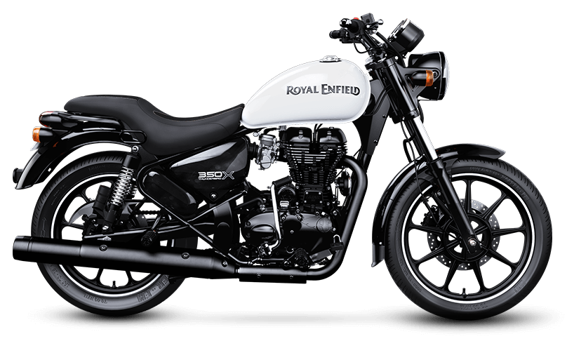

Royal Enfield Classic
Royal Enfield Classic 350 and Classic 500 are models of Royal Enfield motorcycles which have been in production since 2009.
BOOKING DETAILS
The Himalayan
The Himalayan is an Indian adventure touring motorcycle manufactured by Royal Enfield, launched in early 2016.
BOOKING DETAILS
Royal Enfield Electra
Royal Enfield Electra is a rare bike as its production has been stopped by the company, byt still ruling all of the other bikes.
BOOKING DETAILS
Royal Enfield Interceptor
The Interceptor is a British motorcycle made by Royal Enfield between 1960 and 1970.Part of the vintage bikes list.
BOOKING DETAILS
Royal Enfield Meteor 350
The Meteor 350 is the latest model of Royal Enfield. Best cruiser bikes ,comfotable for long rides.
BOOKING DETAILS
Royal Enfield Thunderbird
The Royal Enfield Thunderbird is a cruiser style motorcycle produced by Royal Enfield Motors in India.
BOOKING DETAILS